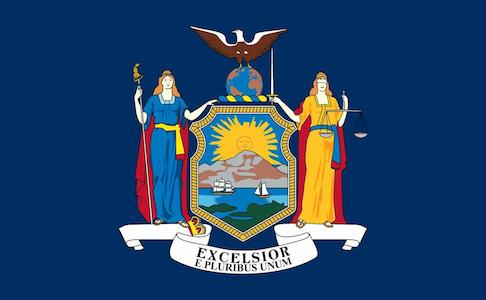

About Me
My name is Stuart Durrant. I am originally from Arizona but live in Western Ny with my wife and 2 kids, 3rd on the way. I am currently a Design Drafter and I work for a company called Moog where I help make airplane parts. I enjoy spending time with my family, playing sports, and learning new things. I am also an amature drone pilot. I am studyiung Software development cause I wanted to get a bachelors degree and Mechanical Engineering wasnt available for online classes.
New York
Western New York is known for its rich history, diverse culture, and beautiful landscapes. It includes cities like Buffalo and Rochester, and attractions such as Niagara Falls and the Finger Lakes. The region offers a mix of urban amenities and outdoor adventures, making it a unique and dynamic place to live and visit.
